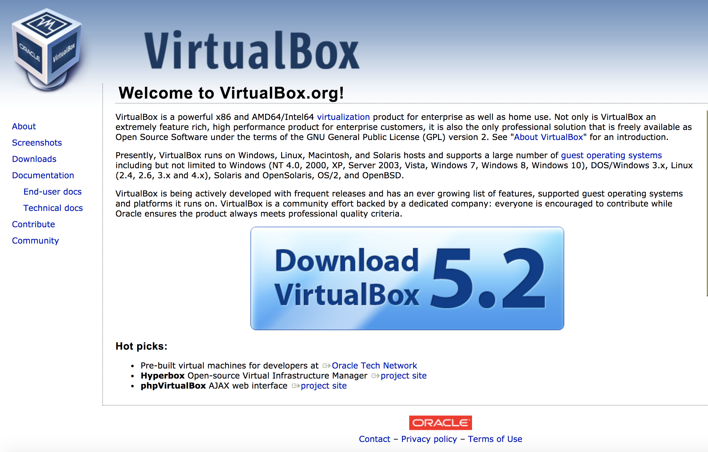
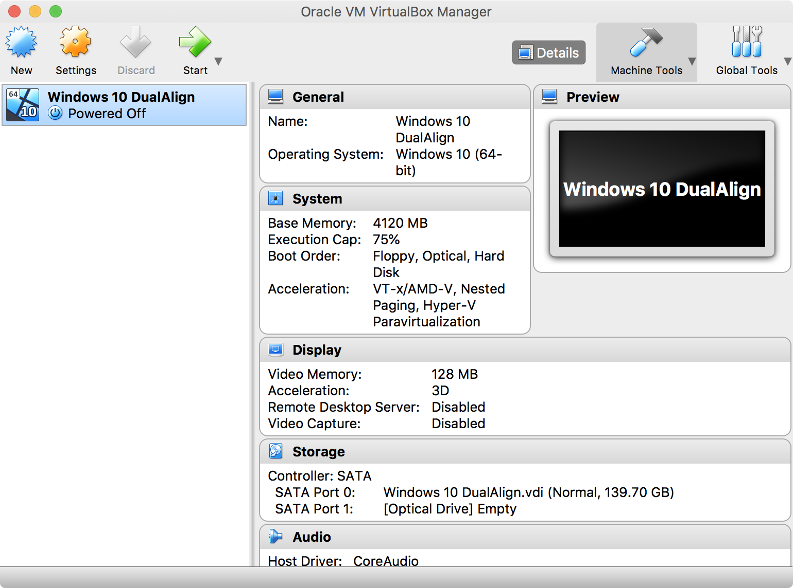
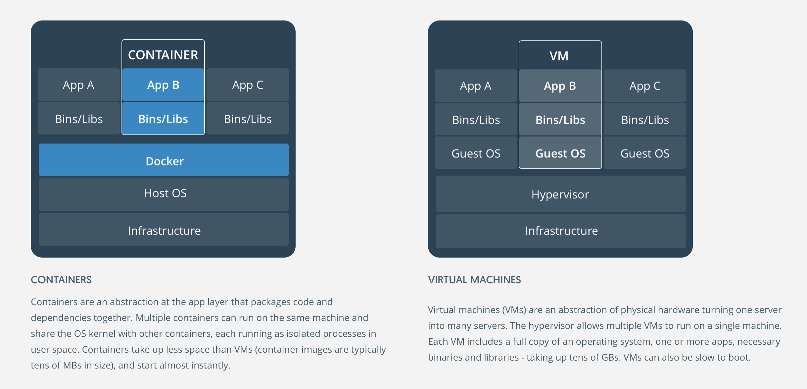

Virtualization and Containers¶
Open Source Software
Wesley Turner
Rensselaer Polytechnic Institute
Department of Computer Science
Licensed under: CC-BY-SA 4.0 https://creativecommons.org/licenses/by-sa/4.0/
Reading Material¶
Reading Material¶
- Using Virtual Machines and Docker:
- Oracle VirtualBox VM (Reference)
Introduction¶
What is Virtualization?¶
In computing, virtualization refers to the act of creating a virtual (rather than actual) version of something, including virtual computer hardware platforms, storage devices, and computer network resources. 1
We will consider two main types:
Virtual Machines
Software to allow a piece of hardware to run multiple operating system images at the same time
Eg. VirtualBox
Containers
A lightweight, stand-alone, executable package of a piece of software that includes everything needed to run it
Eg. Docker
Virtual Machines¶
Concept¶
In a Virtual Machine:
A software layer (hypervisor) emulates the underlying hardware
An additional operating system runs on the virtual hardware
Users interact with the virtualization layer as if it were the underlying machine

Advantages¶
Virtual Machines share resources
Memory, disk, network bandwidth
Better resource utilization
They run in isolated environments
Better security
The same hardware can run multiple operating systems
Eg. Windows and Linux can coexist on the same machine at the same time
An entire environment can be distributed
Less time wasted setting up environments
Less confusion about versions or compatibilities
Machine states can be checkpointed
Can be migrated to a more or less powerful machine as needed
Rapid return of services when hardware goes down
Disadvantages¶
Virtual Machines share resources
Memory, disk, network bandwidth
Poor planning and multiple VMs can drown a machine
The same hardware can run multiple operating systems
May require multiple licenses
A problem with one set of hardware can affect hundreds of VMs
An entire environment can be distributed
The entire guest environment – including the entire guest OS, disk and memory – needs to be represented in the VM file
VMs are large
Each environment communicates to resources through the hypervisor
Guest OS <-> hypervisor <-> native OS
Can significantly impact performance
Machine states can be checkpointed
Checkpoint files can be huge
Virtualization and the Cloud¶
Virtual machine are the de facto way of using cloud compute resources
You are protected by the virtual environment by interference from other VMs
Other VMs, and the provider, are protected from you as well
You can easily add VMs or migrate to more/less powerful VMs as your needs change
You do not necessarily know what hardware you are running on
Performance can be different on different systems
Performance can be different on different clusters
Performance can be different in different locations (proximity sometimes matters)
An Example¶
The VA Scheduling Competition¶
An interesting cloud use for Virtual Machines: https://vascheduling.devpost.com/
The VA was investigating a new scheduler for their Electronic Health Recorder (EHR) system
Contestants were each given a Virtual Machine with access to nominal (simulated) patient data and a version of a running VISTA EHR
The machines ran in the cloud on Rackspace https://www.rackspace.com/
The VA scheduler (continued):
They developed their scheduling solution on the system
At the end of the competition, the machines were checkpointed and submitted to OSHERA (Open Source Electronic Health Record Agent) for evaluation
Three awards were given:
VirtualBox¶
VirtualBox¶
Virtualbox is supported by Oracle and comes with a full suite of documentation and other useful information
Licensing:
GNU General Public License (GPL) version 2
Documents:
Getting VirtualBox:
Source
svn co https://www.virtualbox.org/svn/vbox/trunk vbox
Contributing
Community
Runs on:
Windows, Linux, Macintosh, and Solaris
Guest OS:
Windows (NT 4.0, 2000, XP, Server 2003, Vista, Windows 7, Windows 8, Windows 10)
DOS/Windows 3.x
Linux (2.4, 2.6, 3.x and 4.x)
Solaris
Guest OS continued:
OpenSolaris
OS/2
OpenBSD
Licensing:
VirtualBox is Open Source, but you still need permission for any guest operating system you use
In particular, Windows requires appropriate licensing
A simple interface can be used to define your virtual machine
{kind=link}
The image can then be launched using the Virtualbox program
It gives a window where the entire guest operating system can be accessed
Other buttons allow you to stop and checkpoint (save) the current state
Be careful provisioning your image:
There is an inherent trade-off between image capabilities (size/memory) and VM compactness
That said, changing the size can be a pain
In general, you want to use the smallest VM that meets your needs
Containers¶
Concept¶
A container image is a lightweight, stand-alone, executable package of a piece of software that includes everything needed to run it: code, runtime, system tools, system libraries, settings. 3
In a Container, the abstraction is to the application layer instead of the hardware layer:
The application layer interacts directly with a Container layer
There is no Guest OS layer
The guest layer capabilities come in as shared services in the docker layer
The containers share the operating system kernel
Each container runs as an application in user space
Containers are stateless and use the existing system resources to store data and state
Advantages¶
Containers were designed to solve some of the issues of VMs. Paticularly,
Large image sizes
High latency
Reduced performance
By linking directly to the host kernel, containers:
Can have a reduced size
Can share resources
Can have improved performance
Disadvantages¶
Since containers are built from the bottom up, they can be very compact and light weight, but that means that you need to install/configure everything you want to use in your container.
Architecture¶
Docker¶
Docker Images¶
Docker maintains a library of images that you can run, i.e.:
$ docker images
REPOSITORY TAG IMAGE ID CREATED SIZE
python 3.5 99034fcd3ca6 2 weeks ago 917MB
python latest 746a826ed9d7 2 weeks ago 922MB
redis latest f06a5773f01e 2 weeks ago 83.4MB
node 8 ed145ef978c4 2 weeks ago 673MB
postgres 9.5 a4da5bcea663 2 weeks ago 234MB
mongo 3.2 386ac407ef9f 5 weeks ago 300MB
hello-world latest e38bc07ac18e 3 months ago 1.85kB
ubuntu 16.04 20c44cd7596f 8 months ago 123MB
ubuntu 14.04 d6ed29ffda6b 8 months ago 221MB
fedora latest 422dc563ca32 8 months ago 252MB
mysql latest 5709795eeffa 9 months ago 408MB
ubuntu latest dd6f76d9cc90 9 months ago 122MB
node 7-alpine 4b72b56791f9 13 months ago 58.3MB
codenvy/ubuntu_jdk8 latest 4074bfc5705b 20 months ago 668MB
docker/whalesay latest 6b362a9f73eb 3 years ago 247MB
You can spawn a container by running an image.
$ docker run -it docker/whalesay
root@40aa8aadc15f:/cowsay# cowsay squirt
________
< squirt >
--------
\
\
\
## .
## ## ## ==
## ## ## ## ===
/""""""""""""""""___/ ===
~~~ {~~ ~~~~ ~~~ ~~~~ ~~ ~ / ===- ~~~
\______ o __/
\ \ __/
\____\______/
root@40aa8aadc15f:/cowsay# exit
You can find out what images you have running with
Wesleys-MacBook-Pro:Virtualization_Lecture wes$ docker ps
CONTAINER ID IMAGE COMMAND CREATED STATUS PORTS NAMES
eec278129a30 mongodev "/bin/bash" 5 days ago Up 5 days zen_williams
You can create new images by:
Create a DockerFile to define your image
Run a docker build to turn your configuration into an image
Run just like a pre-canned image
Once you have build a docker image, it will appear when you run docker images
Alternately, you can use a yaml file to define multiple images that work together to create a system
We will explore all of these in the following example.
Example¶
Quick Cheat Sheet¶
## List Docker CLI commands
docker
docker container --help
## Display Docker version and info
docker --version
docker version
docker info
## Execute Docker image
docker run hello-world
## List Docker images
docker image ls
## List Docker containers (running, all, all in quiet mode)
docker container ls
docker container ls --all
docker container ls -aq
Example¶
As a class exercise, we will run through steps 1-3 of the Docker Tutorial at: https://docs.docker.com/get-started/